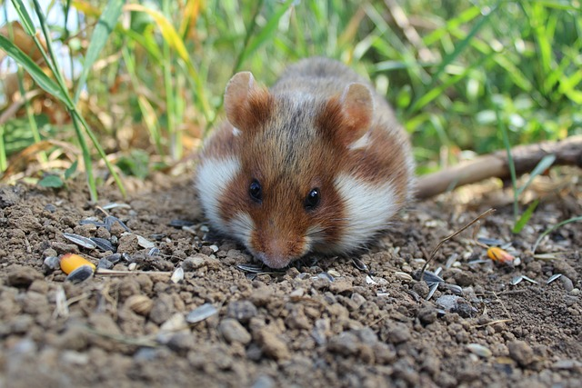
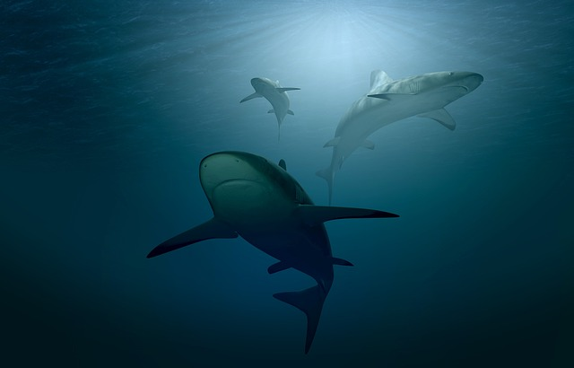
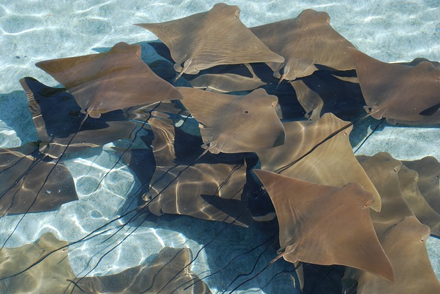
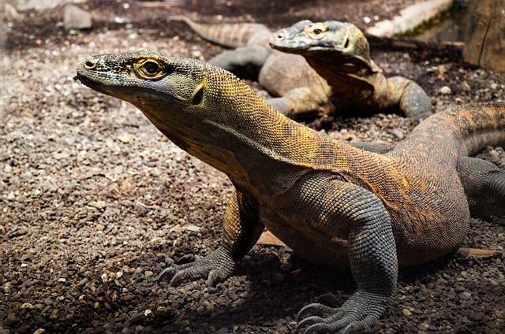
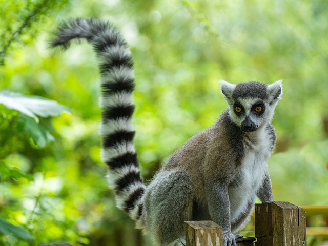
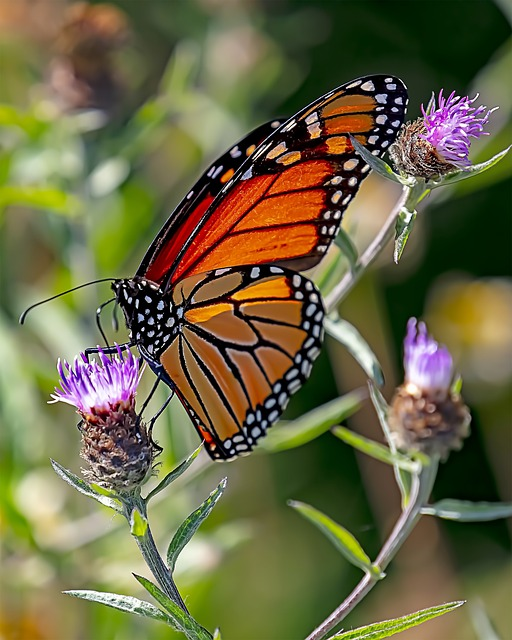
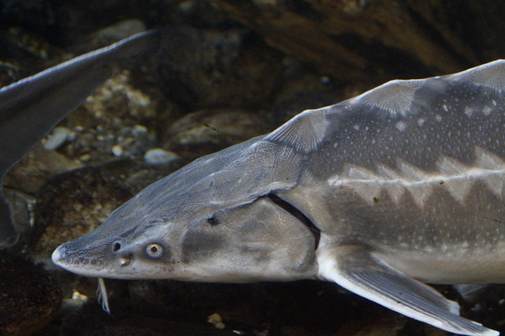
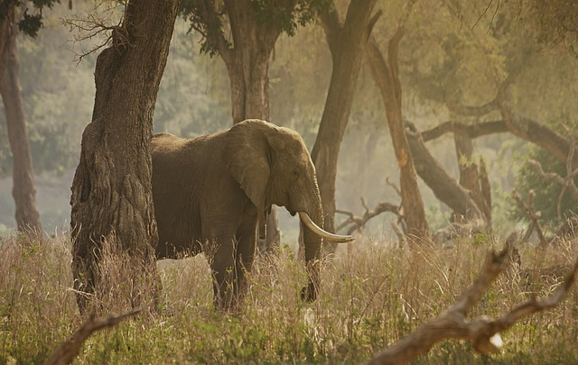

Die Rote Liste
Im Dezember 2023 hat die Weltnaturschutzunion IUCN eine neue aktuelle Rote Liste herausgegeben.
Hier sieht ihr ein kleine Liste voller Tier Bilder die Gefährdet Eingestuft wurde.
Im Dezember 2023 hat die Weltnaturschutzunion IUCN eine neue aktuelle Rote Liste herausgegeben.
Hier sieht ihr ein kleine Liste voller Tier Bilder die Gefährdet Eingestuft wurde.

In Deutschland und der EU sind Feldhamster streng geschützt, aber ihr Nachwuchs nimmt ab. Dies könnte auf die Auswirkungen der industriellen Landwirtschaft mit großen Maschinen und hohem Düngereinsatz zurückzuführen sein, sowie auf übermäßiges Nachtlicht in dicht besiedelten Gebieten.
Bild von: SgH

Die Grüne Meeresschildkröte ist besonders im zentralen Südpazifik vom Aussterben bedroht und im Ostpazifik gefährdet. Hauptursachen sind die Erderhitzung, die die Anzahl der schlüpfenden Babyschildkröten verringert, sowie der Anstieg des Meeresspiegels, der dazu führt, dass mehr Nester an flachen Stränden überflutet werden. Zusätzlich werden Meeresschildkröten oft als ungewollter Beifang in den Netzen von Fischereischiffen gefangen.durch menschliche Aktivitäten wie Küstenentwicklung und Zerstörung von Nistplätzen. Sowie die Verschmutzung der Ozeane durch Plastikmüll und Ölpest stellen ernsthafte Gefahren dar.
Bild von: hhach


Von fast 1.200 Hai- und Rochenarten sind ein Drittel vom Aussterben bedroht, darunter der Weiße Hai und der Geigenrochen. Vor etwa 10 Jahren galt dies nur für ein Viertel aller Arten. Überfischung ist der Hauptgrund für den Rückgang der Bestände, aber auch zerstörte Lebensräume und die Klimakrise beeinträchtigen die Fische zunehmend. Haie und Rochen sind seit 450 Millionen Jahren auf der Erde präsent.
Bild von: PIRO4D
Bild von: marygasaway

Der Komodowaran, eine der bekanntesten Echsenarten, ist aufgrund von Lebensraumverlust, Wilderei und Fragmentierung seines Verbreitungsgebiets stark gefährdet. Die Hauptbedrohung für diese Art ist der Verlust ihrer Beutetiere durch menschliche Aktivitäten wie Jagd und Überweidung durch Nutztiere. Darüber hinaus führen Konflikte mit Menschen und der Klimawandel zu zusätzlichen Herausforderungen für ihr Überleben. Schutzmaßnahmen, wie die Schaffung von Schutzgebieten und die Regulierung des Tourismus, sind entscheidend, um das langfristige Überleben des Komodowarans sicherzustellen.
Bild von: Wildfaces

Die Bedrohung der Lemurenarten wird weiter durch illegale Abholzung, Bergbauaktivitäten und den illegalen Handel verstärkt. Darüber hinaus sind Lemuren anfällig für Krankheiten, die von eingeschleppten Arten verbreitet werden. Die Isolation auf Madagaskar hat dazu geführt, dass Lemurenarten besonders empfindlich auf menschliche Einflüsse reagieren, da sie sich oft nicht schnell genug an veränderte Umweltbedingungen anpassen können. Schutzmaßnahmen, wie die Einrichtung von Schutzgebieten und die Förderung nachhaltiger Landwirtschaftspraktiken, sind entscheidend für den langfristigen Erhalt dieser einzigartigen Primaten.
Bild von: ChiemSeherin

Der Monarchfalter ist bekannt für seine eindrucksvollen Wanderungen über weite Strecken von Nordamerika bis nach Mexiko. Obwohl sie nicht vom Aussterben bedroht sind, sind ihre Populationen rückläufig. Hauptursachen dafür sind der Verlust von Milchweiden, die für die Raupen als Nahrung dienen, sowie der Einsatz von Pestiziden und der Verlust von Überwinterungsgebieten. Der Monarchfalter steht im Fokus von Schutzmaßnahmen wie der Schaffung von Schutzgebieten und der Förderung von blühenden Pflanzen entlang ihrer Wanderwege, um ihre Bestände zu erhalten.
Bild von: Canadian-Nature-Visions

Süßwasserfische stehen weltweit vor zahlreichen Bedrohungen, darunter Überfischung, Habitatverlust, Wasserverschmutzung und Klimawandel. Durch den Bau von Staudämmen und die Umleitung von Flüssen werden ihre Wanderwege unterbrochen, was ihre Fortpflanzung beeinträchtigt. Verschmutztes Wasser und eingeschleppte Arten können ihre Lebensräume stark verändern und die natürlichen Ökosysteme beeinträchtigen, in denen sie leben. Nachhaltiges Fischereimanagement und Maßnahmen zur Erhaltung von Flüssen und Seen sind entscheidend, um den Rückgang der Süßwasserfischpopulationen zu verlangsamen und ihre Vielfalt zu bewahren.
Bild von: Efraimstochter

Der Waldelefant, eine Unterart des Afrikanischen Elefanten, ist durch Wilderei und den Verlust seines Lebensraums stark gefährdet. Ihre Stoßzähne sind ein begehrtes Handelsobjekt, was zu einem dramatischen Rückgang ihrer Population geführt hat. Zudem werden ihre Lebensräume durch die Ausbreitung der Landwirtschaft und den Holzeinschlag zerstört. Schutzmaßnahmen wie die Einrichtung von Schutzgebieten und der Kampf gegen Wilderei sind entscheidend, um das Überleben dieser majestätischen Tiere zu sichern.
Bild von: vinioliverfotografia